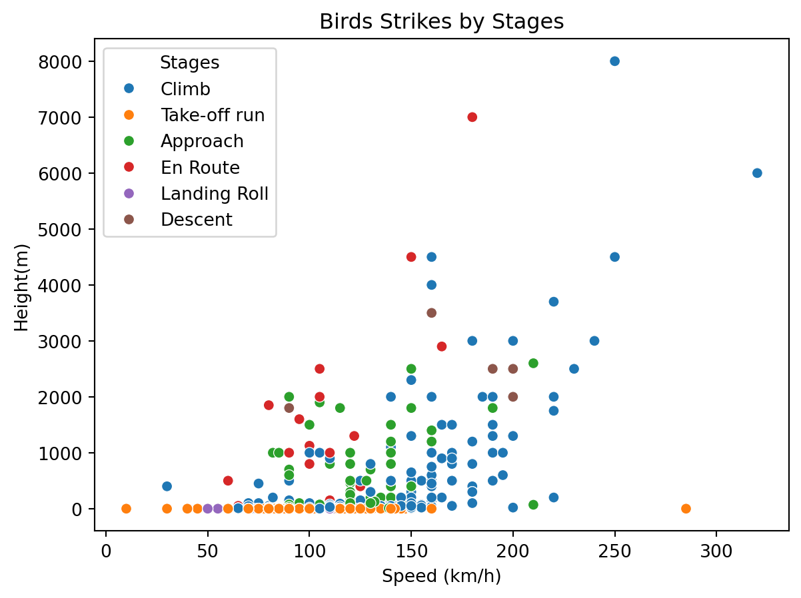
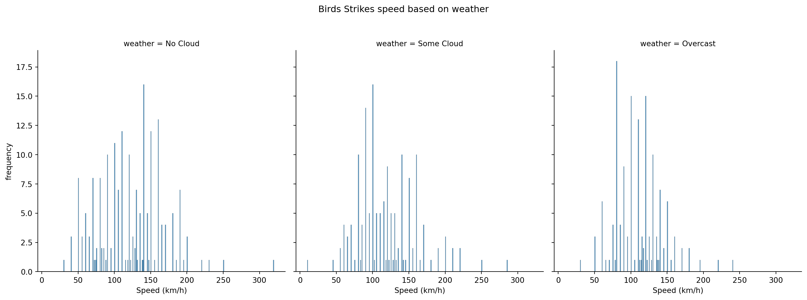
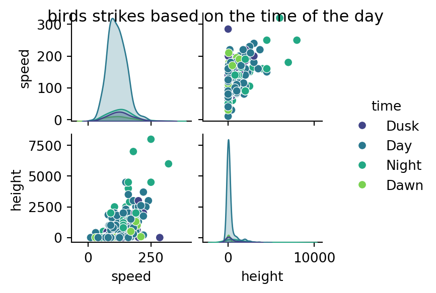

This project explores aircraft bird strike incidents in the United States during the 1990s, using data from a Tidy Tuesday dataset sourced from the Federal Aviation Administration (FAA). Bird strikes pose a significant risk to aviation safety, and understanding the conditions under which they occur is essential for improving prevention and mitigation strategies.
The analysis focuses on how bird strike incidents vary by aircraft speed and altitude, the phase of flight during which the strike occurred, prevailing weather conditions, and the time of day. By examining these factors, this project aims to identify patterns and high-risk scenarios that contribute to bird strike events, offering insights that may inform safer operational practices in aviation.
Import the data
The bird strike dataset is first imported and cleaned to ensure the analysis is based on complete and reliable observations. Records containing missing values are removed, and the dataset is reduced to five key variables relevant to the study: height, speed, sky condition, time of day, and phase of flight. This tidying process helps streamline the analysis and focuses attention on the factors most directly associated with bird strike incidents.
Code
import pandas as pdimport seaborn as snsimport matplotlib.pyplot as pltdf_raw = pd.read_csv("../../../../data/birds_strikes.csv")df = df_raw.copy()df = df.dropna()df_subset = df[["height", "speed", "sky", "time_of_day", "phase_of_flt"]]df_subset.head()
height
speed
sky
time_of_day
phase_of_flt
34
30
140
No Cloud
Dusk
Climb
66
0
150
Some Cloud
Day
Take-off run
87
500
90
No Cloud
Night
Approach
130
7000
180
Overcast
Night
En Route
144
0
95
No Cloud
Day
Take-off run
Visualisation
This scatterplot illustrates when bird strike incidents occur across different phases of flight, showing the relationship between aircraft speed and altitude at the time of impact. By visualizing these variables together, the plot highlights which flight stages are most susceptible to bird strikes and the typical speed and height conditions under which they occur.
Code
import seaborn as snsimport matplotlib.pyplot as pltdf_subset = df_subset.rename(columns = {"phase_of_flt":"stages"})sns.scatterplot(df_subset,x ="speed", y ="height", hue ="stages")plt.xlabel("Speed (km/h)")plt.ylabel("Height(m)")plt.legend(title ="Stages")plt.title("Birds Strikes by Stages")
Text(0.5, 1.0, 'Birds Strikes by Stages')

Another figure analyzes bird strike incidents in relation to weather conditions and aircraft speed at the time of occurrence. This visualization illustrates how bird strikes are distributed across different sky conditions while highlighting the typical speed ranges at which these incidents occur.
Code
df_subset = df_subset.rename(columns = {"sky" : "weather"})weather = sns.displot(df_subset, x ="speed", binwidth =1, col ="weather",)weather.set_axis_labels("Speed (km/h)", "frequency")weather.fig.suptitle("Birds Strikes speed based on weather", y =1.1)
Text(0.5, 1.1, 'Birds Strikes speed based on weather')

Another figure examines bird strike incidents based on the time of day at which they occur. This visualization helps identify temporal patterns in bird strike events, highlighting periods of the day when incidents are more likely to happen.
Code
df_subset = df_subset.rename(columns = {"time_of_day":"time"})speed = df_subset [["speed", "time","height"]]pp = sns.pairplot(data = speed, hue="time", palette="viridis", height =1.5, aspect =1.2)pp.fig.suptitle("birds strikes based on the time of the day")
Text(0.5, 0.98, 'birds strikes based on the time of the day')

The Statistics
Based on the summary statistics, this table presents the mean aircraft altitude and speed at which bird strikes occur across different phases of flight. This analysis helps compare how typical height and speed vary by flight stage when bird strike incidents happen.
This section provides a statistical summary of bird strike incidents based on the aircraft’s speed and altitude at the time of occurrence. The summary highlights the central tendencies of these variables, offering insight into the typical flight conditions under which bird strikes happen.
Code
import matplotlib.pyplot as pltimport pandas as pdimport scipy.stats as statsimport seaborn as snsimport statsmodels.formula.api as smfmod = smf.ols("speed ~ height", df_subset)res = mod.fit()res.summary()print (res.summary())
OLS Regression Results
==============================================================================
Dep. Variable: speed R-squared: 0.260
Model: OLS Adj. R-squared: 0.258
Method: Least Squares F-statistic: 176.7
Date: Wed, 08 Jul 2026 Prob (F-statistic): 9.18e-35
Time: 09:49:47 Log-Likelihood: -2509.9
No. Observations: 505 AIC: 5024.
Df Residuals: 503 BIC: 5032.
Df Model: 1
Covariance Type: nonrobust
==============================================================================
coef std err t P>|t| [0.025 0.975]
------------------------------------------------------------------------------
Intercept 108.6335 1.689 64.316 0.000 105.315 111.952
height 0.0232 0.002 13.292 0.000 0.020 0.027
==============================================================================
Omnibus: 10.646 Durbin-Watson: 1.917
Prob(Omnibus): 0.005 Jarque-Bera (JB): 13.673
Skew: 0.216 Prob(JB): 0.00107
Kurtosis: 3.680 Cond. No. 1.05e+03
==============================================================================
Notes:
[1] Standard Errors assume that the covariance matrix of the errors is correctly specified.
[2] The condition number is large, 1.05e+03. This might indicate that there are
strong multicollinearity or other numerical problems.